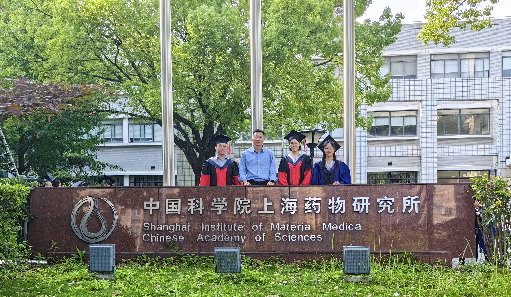
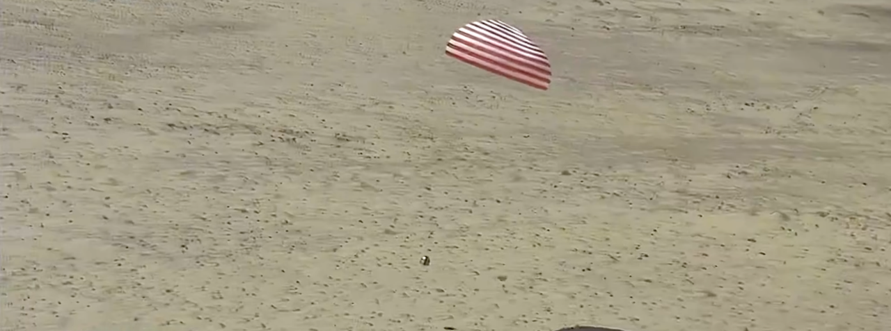

Drug Discovery &. Chemical Biology
2025.05
This year two PhD students (Junjie Zhang and Li Na Li) and two MSc students (Wan Li and Junyuan Wei) will complete their degrees. Thank you for your contributions to the lab. Wishing you all a brilliant future ahead.
2025.04.30
Just as Shenzhou-19's crew capsule touched down safely at the Dongfeng landing site, our LSD1 inhibitor was approved for clinical trials.
2025.02.18
We are very glad that X-L177, a highly selective reversible LSD1 inhibitor, has been submitted for IND application. Congratulations to whole LSD1 team, especially to Dr. Tongchao Liu, and Ph.D student Na Li.
2024.06.20
We are very glad that Gumarontinib, a drug we co-developed, an oral highly selective mesenchymal-epithelial transition (MET) inhibitor has been approved by the Japanese Ministry of Health, Labour and Welfare in June 2024.
We are very glad that Gumarontinib as a Category 1 innovative new chemical drug, for the treatment of adult patients with locally advanced or metastatic non-small cell lung cancer (NSCLC) with MET exon 14 skipping mutation got conditionally approval on March 8, 2023, by the National Medical Products Administration (NMPA) of China.
In 2022, Gumarontinib was granted Orphan Drug Designation (ODD) by the Food and Drug Administration (FDA) of Unites States for the treatment of NSCLC with MET genomic aberration.